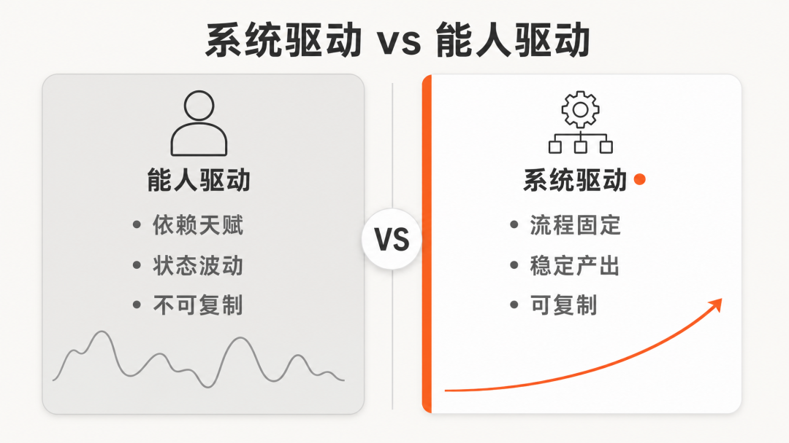
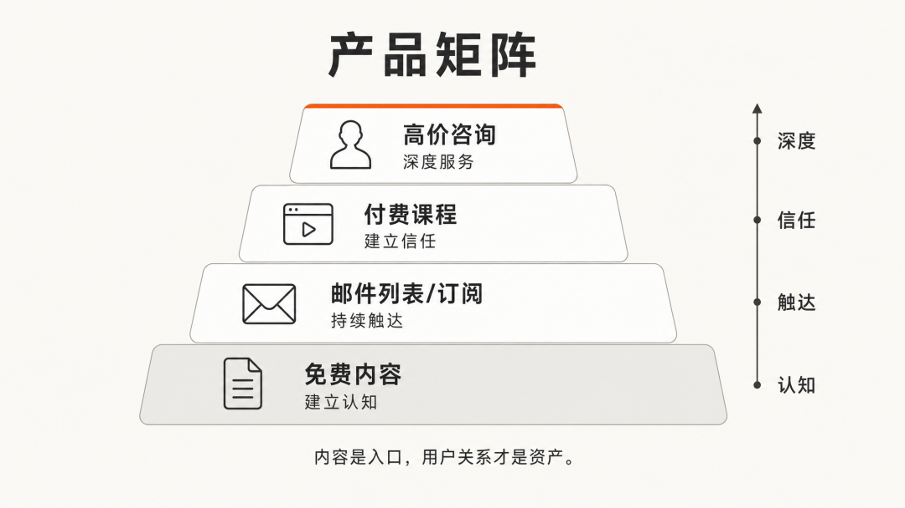
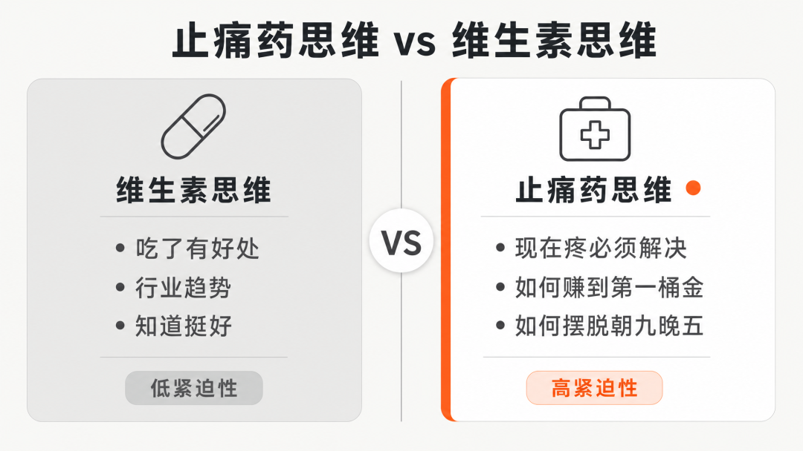
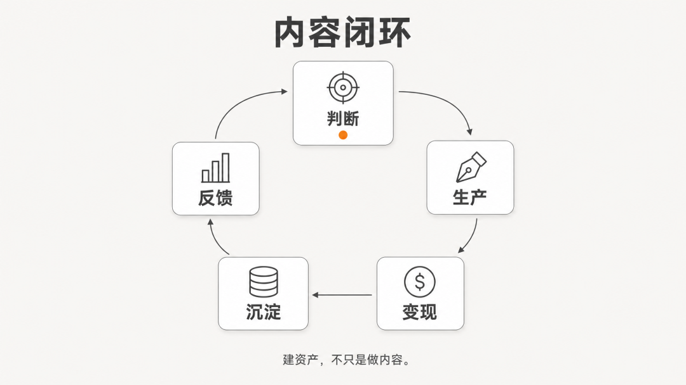
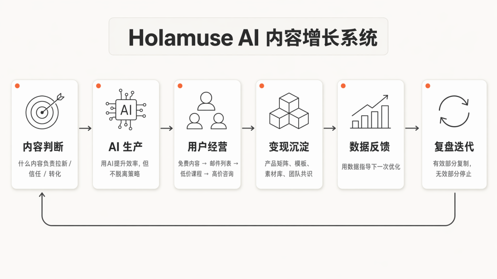
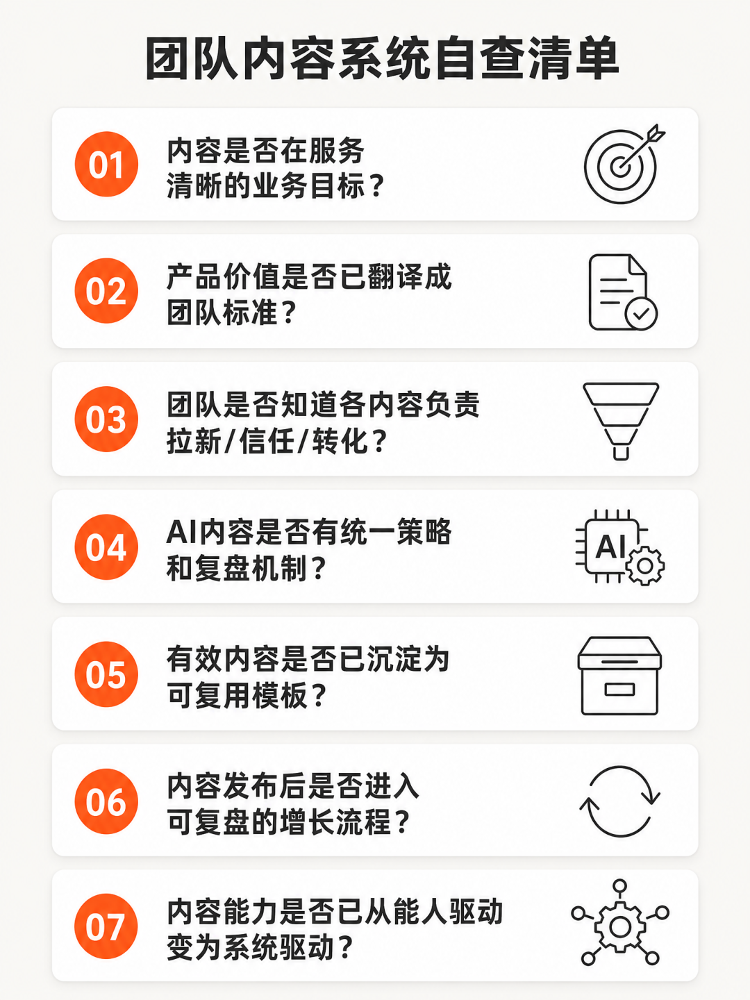
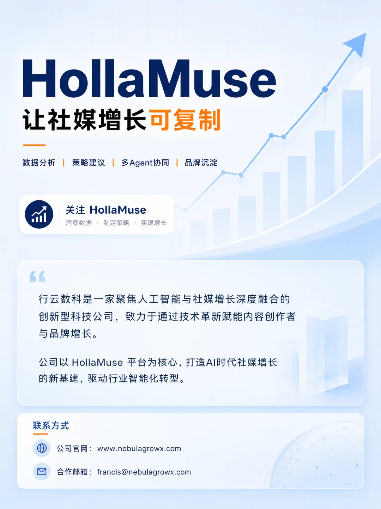

👇关注我们，了解AI时代的社媒增长新基建
很多人看到 Tim Denning 的故事，第一反应是：
这个人 太自律了。
每天只工作4小时，月入10万美金，在Medium上累计写了5亿浏览量，从银行职员变成全职作家。
这些数字很容易让人得出一个结论：
极致的时间管理，确实能创造惊人的产出。
所以创业者和内容从业者，也要更严格地规划时间、提高效率、减少分心。
这个判断有一部分是对的。
时间边界 确实能倒逼聚焦。
但如果只看到这一层，企业内容很容易 走偏。
因为Tim Denning真正值得拆的，不是他有多自律。
而是他如何用一套 内容系统，把有限的时间变成 持续放大的资产。
换句话说：
他不是靠"每天4小时"走到今天，而是跑通了一套 "判断—生产—变现—沉淀" 的内容闭环。
从银行职员到全职作家。
从单篇文章到48万字/月的稳定输出。
从广告收入到20万人邮件列表、在线课程、咨询产品。
从个人写作到可规模化的产品矩阵。
这条路径背后，藏着企业做内容真正应该关心的问题：
不是怎样挤出更多时间，而是怎样建立一套 能持续生产有效内容、持续变现、持续沉淀 的系统。
01 高产不是拼时间，是拼系统

Tim Denning 在 Medium 上每月写48万字，累计5亿浏览量，收入超过100万美元。
这个数字听起来像是一个"超级勤奋"的故事。
但仔细看他的工作方式，会发现一个反直觉的事实：
他写得多，不是因为他花的时间多，而是因为他花的判断少。
什么意思？
大多数写作者每天最大的时间消耗，不是打字，而是 犹豫。
写什么？
怎么写？
这个选题会不会火？
这个角度会不会被喷？
这种犹豫，本质上是因为 没有清晰的内容判断标准。
Tim Denning 的做法是：
他有一套固定的 内容生产框架。
每天固定时间写作，固定结构输出，固定渠道分发。
他不追求每一篇都是杰作，他追求的是 持续输出 + 快速反馈 + 迭代优化。
这就是 系统驱动 和 能人驱动 的区别。
能人驱动是：今天状态好，写一篇爆款；明天状态差，写不出来。
系统驱动是：不管状态如何，系统保证每天都有内容产出，然后让市场来筛选。
对企业来说，这一点尤其重要。
很多团队的内容产能波动，不是因为团队不努力，而是因为 判断标准不清晰。
今天追这个热点，明天试那个形式，后天换一个平台。
每一次都是重新决策，每一次都消耗大量认知资源。
真正的高产，不是时间多，而是 决策少。
把内容判断标准化，把生产流程固定化，把反馈机制自动化。
这才是 内容系统 的真正价值。
02 变现不是卖时间，是卖产品矩阵

Tim Denning 的收入来源，不是单一的。
Medium 广告收入只是基础。
他真正的资产，是 20万人的邮件列表。
以及基于这个列表构建的 产品矩阵：
在线课程《Make Your First $1,000 Online》。
付费订阅。
咨询服务。
每一层产品，对应不同的用户信任深度和付费意愿。
这揭示了一个关键认知：
内容变现的终点，不是把内容卖得更贵，而是把用户关系经营得更深。
很多团队做内容，只做到了第一层：
写文章、发视频、做曝光。
然后希望用户看完直接买单。
这种"内容→成交"的直线思维，效率很低。
因为用户从第一次接触你，到真正信任你，中间需要多次互动。
Tim Denning 的产品矩阵，本质上是在 分层经营用户关系：
免费内容 → 建立认知。
邮件列表 → 持续触达。
低价课程 → 建立信任。
高价咨询 → 深度服务。
每一层都是下一层的 筛选器和信任铺垫。
对企业来说，这意味着：
内容不是成本中心，而是用户关系的入口。
但很多企业只把内容当成"获客手段"，没有设计后续的用户经营链路。
内容发出去，用户看完了，关系就结束了。
这就是 内容闭环 没有跑通的表现。
真正值得学的，不是 Tim Denning 写了多少字，而是他如何把内容变成 用户资产，再把用户资产变成 产品矩阵。
03 内容不是写得多，是写得准

Tim Denning 有一个很重要的写作原则：
卖止痛药，不卖维生素。
什么意思？
维生素是"吃了有好处，不吃也没事"。
止痛药是"现在疼，必须解决"。
他的内容，永远围绕用户 当下最痛的点 展开。
不是泛泛地分享人生感悟，而是精准地解决具体问题。
比如：
如何赚到第一个1000美元？
如何摆脱朝九晚五？
如何建立被动收入？
这些选题，都是 具体、可衡量、有紧迫性 的。
对企业内容来说，这一点尤其值得反思。
很多企业的内容，更像"维生素"：
介绍公司文化。
分享行业趋势。
展示产品功能。
这些内容不是没用，但用户看完的感觉是："嗯，挺好的"，然后就没有然后了。
因为 没有触发行动的动力。
真正有效的内容，要回答用户心里的一个具体问题：
我现在遇到了什么麻烦？看了你的内容，能不能帮我解决？
这就是 止痛药思维。
不是你想表达什么，而是用户正在疼什么。
Tim Denning 的内容系统，核心不是产量，而是 精准度。
他知道用户什么时候会停下来，什么痛点会让他们愿意付费，什么承诺会让他们相信。
这种 内容判断能力，才是真正的核心竞争力。
04 增长不是追热点，是建闭环

Tim Denning 的20万人邮件列表，是怎么来的？
不是一次性爆款带来的，而是 长期内容沉淀 + 持续价值输出 的结果。
他在 Medium 上写了大量内容，每一篇都在筛选和积累真正认同他价值观的读者。
然后，通过邮件列表，把这些读者从 平台流量 变成 私有资产。
这就是 内容闭环 的关键一步：
把公域流量，沉淀到私域关系。
很多团队做内容，只关注前端的曝光数据。
阅读量、点赞数、转发量。
但这些数据，本质上是 平台资产，不是企业资产。
今天平台算法一变，流量就没了。
真正值得积累的，是 用户关系。
Tim Denning 的邮件列表，就是他的 内容护城河。
不管 Medium 的政策怎么变，不管社交媒体算法怎么调整，他始终有一个可以直接触达的核心用户群。
对企业来说，这意味着：
内容增长的终点，不是更多的阅读量，而是更深的用户关系。
但很多企业只做到了"发内容"，没有设计"沉淀用户"的环节。
内容看完了，用户走了，关系没有留下。
这就是 增长闭环 没有跑通的表现。
真正值得学的，不是 Tim Denning 追了多少热点，而是他如何把每一次内容输出，都变成 用户资产的积累。
05 从一人公司到企业内容系统的映射
Tim Denning 是一个人作战。
但他的系统逻辑，完全可以映射到企业场景。
甚至，企业比他更有优势：
他有系统，但缺团队。
企业有团队，但缺系统。
很多企业的内容团队，每天都在忙碌：
写文案、拍视频、做设计、发内容。
但忙碌的背后，缺少一个关键的东西：
统一的内容判断标准。
创始人知道品牌要表达什么，但很难翻译成团队能执行的标准。
市场负责人知道哪些选题有效，但不一定能沉淀成可复用的方法。
运营同事知道每天要发什么，但不一定知道这条内容在增长链路里承担什么任务。
AI 工具可以生成很多版本，但如果输入的是模糊判断，输出也只是更多模糊内容。
这就是 能人驱动 的困境：
内容能力只停留在个体身上，无法成为企业资产。
核心负责人一忙，质量就波动。
新人加入，标准就要重新解释。
换一个平台，经验又很难迁移。
Tim Denning 的案例提醒我们：
真正可持续的内容能力，不是依赖某个人的天赋，而是依赖一套清晰的系统。
这套系统包括：
内容判断标准：什么内容负责拉新，什么内容负责信任，什么内容负责转化。
生产流程规范：从选题到写作到发布，每一步都有明确的标准和模板。
反馈复盘机制：数据不是看完就完，而是用来指导下一次内容优化。
资产沉淀方法：有效内容、有效表达、有效选题，都要沉淀成可复用的资产。
当这些内容被 标准化，内容才有机会从 "能人驱动" 变成 "系统驱动"。
06 AI 放大了产能差距，也放大了判断差距
AI 让内容生产变得更容易。
但也让一个问题更明显：
没有判断系统的团队，会更快地生产普通内容。
过去，一篇文章写得慢，问题暴露得也慢。
现在，一天可以生成几十个标题、几套脚本、几版长文。
如果方向本身不清楚，错误也会被更快放大。
这不是 AI 的问题。
AI 擅长执行、扩展和重组。
但它需要被放进清晰的 业务框架 里。
企业不能只问 AI 能不能写得更快。
更应该问：
AI 生成的内容，在验证哪个业务判断？
面向哪类人群？
要解决的是认知问题、信任问题，还是决策问题？
它跑出来的数据，能不能帮助下一轮内容更准确？
它能不能沉淀成团队可复用的模板、素材和判断标准？
如果这些问题没有答案，AI 只是提高了 内容流水线的速度。
但如果这些问题被系统化，AI 就不只是一个写作工具。
它会成为 企业内容能力 的一部分。
它可以帮助团队把已有经验拆成流程，把有效表达扩展成系列，把复盘结论变成下一轮生产规则。
这才是 AI 内容系统 真正有价值的地方。
但这里有一个更深层的问题：
如果团队本身没有清晰的判断标准，AI 生成的内容，也只是更多"不确定的输入"。
真正需要建立的，不是更快的生产能力，而是把内容转化为判断的系统能力。
07 Holamuse 关注的，是把内容能力变成团队资产

Tim Denning 的内容系统之所以值得讨论，不是因为他有一份神奇时间表，也不是因为普通人可以复制他的经历。
而是因为他提供了一个很重要的提醒：
内容不是用来堆积的，是用来解决问题的。
对企业来说，这套逻辑同样成立。
内容判断标准，帮你建立清晰的方向。
生产流程规范，帮你提高稳定产能。
用户关系分层，帮你经营深度信任。
反馈复盘机制，帮你持续优化迭代。
资产沉淀方法，帮你把经验变成可复用模板。
这些动作合在一起，才是一套真正可用的内容增长系统。
但企业真正难的，不是让一个人学会这些方法。
而是让整个团队都能用同一套标准去判断内容、生产内容、复盘内容。
Holamuse 关注的，正是这件事。
不是帮企业"写更多内容"或"生成更多文案"。
而是帮企业建立一套从内容判断到生产到变现到沉淀的完整链路：
把产品价值翻译成用户能理解的买点 把团队经验沉淀成可复用的内容标准 用 AI 提升生产效率，但不让 AI 脱离策略 用数据反馈判断内容是否被市场接住 把有效内容变成模板、素材库和团队共识
这套链路的价值，不是让团队每天多发几条内容。
而是让内容动作变得可解释。
团队知道为什么要做这条内容。
知道它应该服务哪个业务目标。
知道结果出来以后如何判断。
也知道有效部分如何复制、无效部分如何停止。
企业内容的难点，从来不是"能不能再写一篇"。
真正难的是，能不能让内容成为一个持续学习、持续复盘、持续沉淀的系统。
08 从 Tim Denning 到企业团队，真正可复制的是系统能力

Tim Denning 的时间管理方式，不适合大多数企业直接复制。
企业不需要为了产出而刻意压缩时间。
也不需要把内容管理变成个人表演。
但他的内容路径里，有几件事非常值得借鉴：
识别内容真正有价值的部分。
把有效反馈转化成可复制动作。
让不同内容承担不同任务。
不断扩展内容的应用场景。
最终把个人经验沉淀成团队资产。
更具体地说：
企业需要关注的，不是自己想写什么。
而是团队为什么需要这个内容。
不是一篇文章发完了就结束。
而是拆出它背后的可复用结构。
不是所有内容都承担同一个目标。
而是让拉新内容扩大触达，信任内容建立关系，转化内容推动行动，品牌内容沉淀认知。
如果企业已经开始投入内容和 AI，不妨重新看几个问题：
现在的内容，是在服务清晰的业务目标，还是只是维持更新？
最核心的产品价值，是否已经被翻译成团队能理解和使用的标准？
团队是否知道，哪些内容负责拉新，哪些负责信任，哪些负责转化？
AI 生成的内容，是否有统一的策略、标准和复盘机制？
过去做过的有效内容，是否已经沉淀成可复用的模板和团队共识？
内容发布后，有没有进入可复盘、可复制、可沉淀的增长流程？
团队的内容能力，是否已经从"能人驱动"变成了"系统驱动"？
如果这些问题还没有被系统回答，内容增长就很容易停留在个人层面。
偶尔有一个人写出好内容。
偶尔抓住一个有用选题。
偶尔得到一次传播突破。
但下一次能不能复制，团队并不知道。
Tim Denning 的案例真正提醒我们的，不是时间管理有多重要。
而是 内容增长必须有系统。
对企业来说，真正可持续的内容能力，不是追逐每一次热闹。
而是把每一次有效反馈，都转化为下一次更确定的判断。
产能会越来越便宜。
表达会越来越多。
真正稀缺的，是谁能把内容、数据、业务和团队协作，组织成一套 持续进化的增长系统。
这也是 Holamuse 想和企业一起完成的。
关于我们

★更多干货★
本文基于公开信息与行业观察整理，部分观点源自对AI安全研究的长期跟踪。